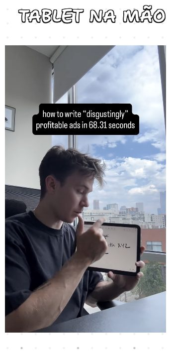

Tablet na mão
MeioApresentador segura tablet ou caderno e aponta para o conteúdo enquanto fala.
- Como gravar
- Tablet na altura do peito, inclinado para não refletir luz. O dedo apontando guia o olhar.
- Roteiro
- Promessa específica no gancho → percorre o conteúdo item a item → fecha na ação.
- Erro comum
- Tela do tablet ilegível no celular. Poucas palavras por linha.